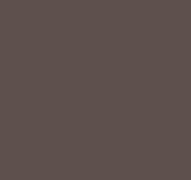

For my mini-project this week, I was really inspired from what I had seen in Dave Rodrigez's project, Colors of Ozu. It utilizes the "Z-projection" and "stack" features of ImageJ, an image processing software, to basically average together the images in the stack. Rodrigez used this method to analyze the color filmography of director Yasujirō Ozu, and I was interested to see if the same tools and analysis could be applied to the filmography of Paul Thomas Anderson. For this small project specifically, I decided to create summed z-projections utilizing the screenshots already gathered for the Paul Thomas Annotated project, using a program called Fiji (which is really just another name for ImageJ).




As you can see, all of these projections are pretty muddy, dark, and gray. I still think that this has merit, though! If anything, they show the variation and contrast of each film in regards to their color palettes and shot compositions. There are actually a few ways of processing summed z-projections, and each one yields wildly different results. The projections shown above use the "average intensity" setting, which takes the mean of the pixel values (the number assigned to each pixel) across the given stack. The other setting that matters to us here us the "sum slices" setting, which takes the sum of these pixel values rather than the mean. As a point of comparison, here is the sum slices z-projection for Magnolia:
As you can see, we have a completely different result here! Colors of Ozu uses the sum slices setting (which I only realized after I had already made all of the projections above). I think this tells a very different story than the other image; I'd like to watch more of the films in order to produce a better analysis. Aside from that, moving forward, I would like to continue playing around with Fiji and what results I can get from the program (which actually appears to be program designed for medical use!), along with looking into the scholarship surrounding Digital Surrealism that Colors of Ozu touches on. That project also employs the use of graphics that display median hue and median saturation, which I'd be interested in figuring out as well! Dave Rodriguez's contact information is listed on the Colors of Ozu website, so I'm considering reaching out to him for advice on how to move forward as well.